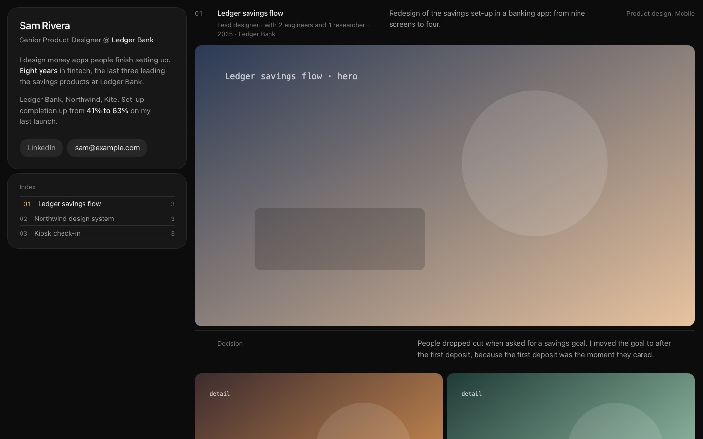
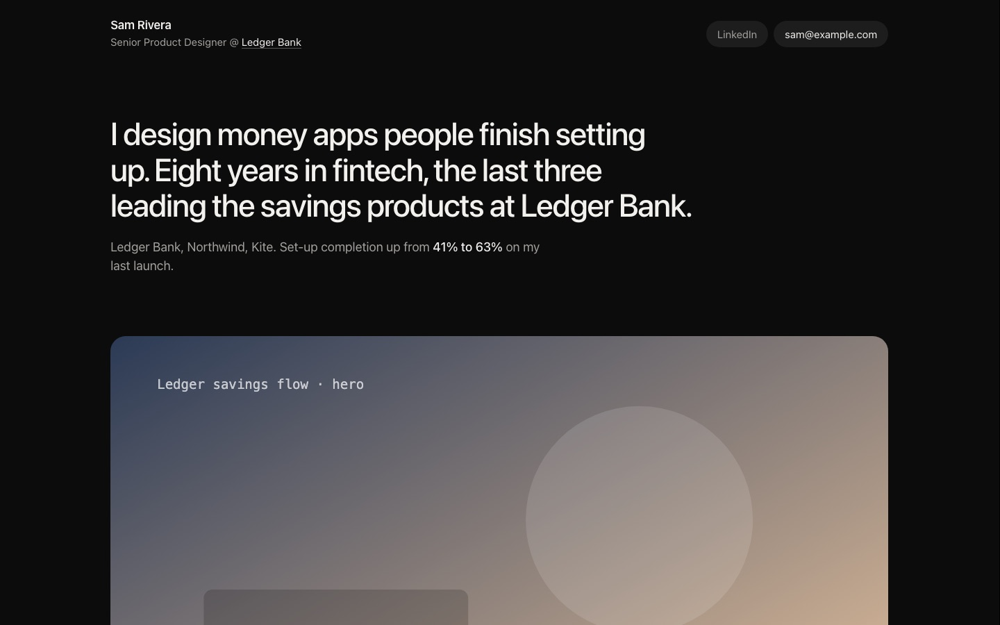
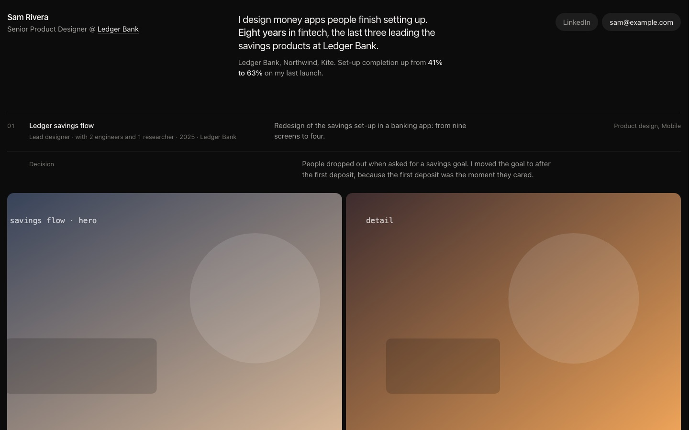

Index
You stay fixed on the left. The work scrolls large on the right.
Best forArt direction, brand, 3D, illustration.
Two skills for your AI agent
One skill reads your portfolio like the person hiring. The other builds one that passes. By Owi, after 15 years in digital product.
npx skills@latest add adrituyo/30sWhoever is hiring has forty tabs open. The first look decides which ones get a real read, and it always goes the same way.
0:00 / 0:30
Who is this, and at what level?
Is the work real, and is the best of it first?
What was their part, and what changed because of it?
Then they leave, or they write to you.
What a stranger gets from your portfolio in 30 seconds, and what to fix first.
Audit my portfolio: yourname.com. I'm applying for senior product roles.
Use itPasses on the first screen, loses it on the scroll: the headline says lead, the work says art director.
9 of 17 pass · 4 weak · 4 fail
Each fix comes with the copy rewritten. It never invents a fact about you.
None is about taste. A plain portfolio can pass all seventeen; a beautiful one can fail half.
A folder of work in, a finished portfolio out.
Build my portfolio from this folder. I'm a product designer, aiming at senior fintech roles.
Use itA finished site in a folder. Nothing to install.

Case grid · 3 projects · 18 pictures
It asks which grid you want, writes the copy from your facts, and lists what an audit would still flag.
The same portfolio, built three ways.

You stay fixed on the left. The work scrolls large on the right.
Best forArt direction, brand, 3D, illustration.

Every piece at one size, two across.
Best forFilm, motion, photography.
A statement, then a page per project: role, decision, result.
Best forProduct, UX, design leadership.